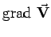
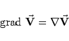
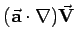
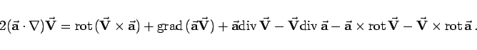
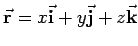
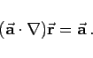

Inhalt Index DeskTop Bronstein

 Vektoranalysis und Feldtheorie Räumliche Differentialoperationen Nablaoperator, Laplace-Operator
Vektoranalysis und Feldtheorie Räumliche Differentialoperationen Nablaoperator, Laplace-Operator


Der Vektorgradient  kann mit Hilfe des Nablaoperators gemäß
|  | (13.68a) |
dargestellt werden. Für den im Zusammenhang mit dem Vektorgradienten vorkommenden Ausdruck  gilt:
|  | (13.68b) |
Außerdem gilt für :
|  | (13.68c) |